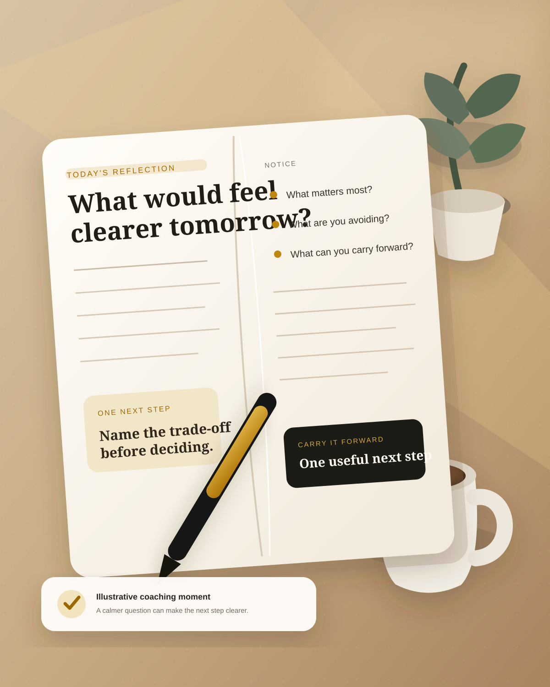

Conversational AI
Talk through challenges with an adaptive coaching partner that responds to your context.
Explore sessions →Evolmeo is a private conversational AI coach that helps you reflect clearly, make better decisions and turn insight into a practical next step.

Conversation stays at the centre. Assessments, journals and exercises add structure only when it helps.
Talk through challenges with an adaptive coaching partner that responds to your context.
Explore sessions →Use guided self-reflection to surface values, patterns and priorities without presenting a clinical diagnosis.
Explore assessments →Turn insights into a personal record with daily entries, CBT reflections and somatic check-ins.
Explore journaling →Use focused frameworks such as 5× Why, values discovery and difficult-conversation prep.
Explore tools →Start with the real question. Evolmeo helps you slow it down, notice the pattern and leave with something concrete to carry forward.
Use Evolmeo before a difficult conversation, during a career decision or when the same pattern keeps showing up.
ILLUSTRATIVE COACHING EXAMPLE“I need to decide whether to stay, leave, or change the role — but I keep arguing both sides.”
Evolmeo helps surface the trade-off underneath the indecision.
ILLUSTRATIVE COACHING EXAMPLE“I know the conversation I need to have. I just want to go into it calmer and clearer.”
Use a prompt flow, capture the next step, then return when you need it.
Product use cases are shown as examples rather than customer claims. Verified testimonials can replace them when supplied.

Prepare for the conversation you have been postponing — with the goal, trade-off and next step already in view.
Separate values, fears and trade-offs before choosing a direction.
Guided assessment + coaching conversationConnect insights across sessions so reflection becomes useful context, not noise.
Journal + bounded coaching memoryClear tiers, straightforward features and room to scale.
For individuals beginning a thoughtful coaching practice.
For people building a consistent coaching rhythm.
For teams and organisations that need governance and support.
Concept pricing for interface preview. Final prices, usage limits and annual billing terms should be confirmed before launch.
Privacy controls stay visible so you can understand what is remembered, what is account-scoped and what can be removed.
Manage privacy →Start with the real question. Evolmeo will help you find the clearer next step.